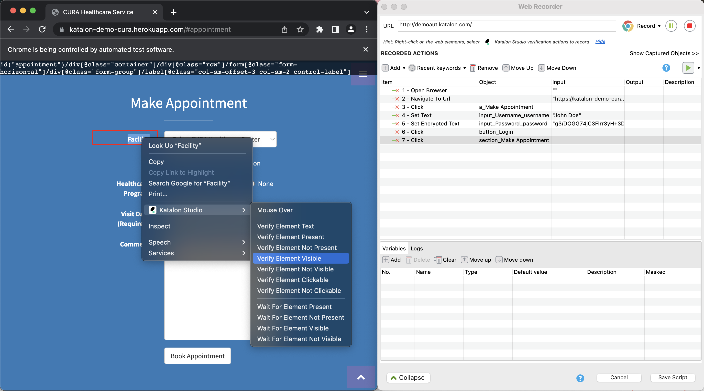
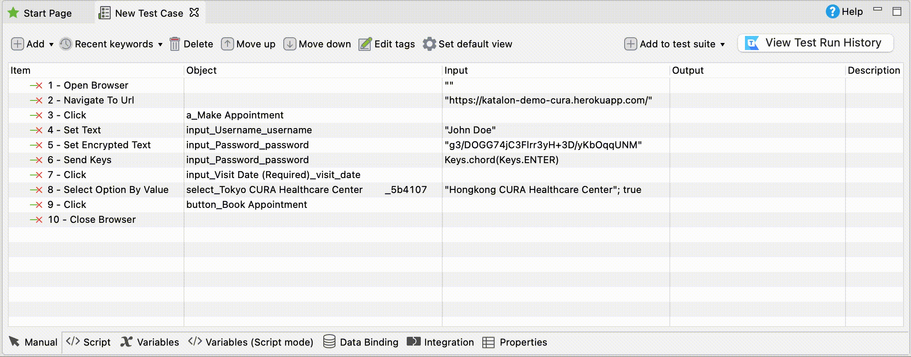

Katalon Studio in the testing cycle
Katalon Studio is an IDE for automated test creation, empowering you with the capabilities to complete most tasks in the testing cycle.
Create test scripts
The Record and Spy utilities help generate automated test cases by interacting with your application under test. Katalon Studio comes with an editor feature where you can add assertions and develop your test scripts with our built-in keywords.

In Katalon Studio, you can script your test case using both the manual view and the script view. Switching between two modes without switching interfaces helps you move from manual to automated testing easier as you learn how to generate test scripts using a low code approach.

Add statements as test steps: Statements in Katalon Studio overview
Add test fixtures and test listeners (test hooks): Test Listeners (Test Hooks)
Conduct data-driven tests: Data-driven testing with Katalon Studio
Use Katalon Studio built-in keywords and custom keywords: Introduction to custom keywords in Katalon Studio
Debug your test script in Katalon Studio: Debug a test case in Katalon Studio
Organize test cases
Group relevant test cases together into test suites and test suite collections for certain testing goals using Katalon Studio.
Manage test suites: Manage test suites in Katalon Studio.
Manage dynamic test suites: Manage dynamic test suites in Katalon Studio.
Manage test suite collections: Manage test suite collections in Katalon Studio
Learn how to work with Git in Katalon Studio to help move your testing project on cloud and explore further capabilities in the Katalon Platform: Git integration in Katalon Studio
Execute tests
After creating your tests in Katalon Studio, you can execute your tests in different scenarios and environments to ensure full test coverage.
When registering for a free trial of Katalon Studio, you also have 30-day trial for Katalon Runtime Engine - our add-on for console execution, which can further applied in CI/CD, and 30-day trial for Katalon TestCloud - our cloud-based test environment.
Explore multiple way to execute your tests in Katalon Studio: Execute tests with Katalon Studio overview
Execute tests in console mode with Katalon Runtime Engine (KRE) using the Command Builder. With KRE, you can integrate your tests into CI/CD pipeline to automatically trigger your tests whenever there are updates to your code: Command Builder in Katalon Studio
Execute tests on cloud environment with Katalon TestCloud in Katalon Studio without having to maintain the infrastructure for your tests: Use TestCloud in Katalon Studio
Schedule a test suite collection execution in Katalon Studio using our plugin from Katalon Store: Schedule a test suite collection execution
Set desired execution behaviors of Katalon Studio: Introduction to Desired Capabilities in Katalon Studio
Analyze reports
During and after execution, Katalon Studio automatically generates execution logs, report summaries and report files for you to analyze your test results. You may also share test results to Katalon Platform, or via email and other communication platforms like Slack or Microsoft to notify team members in real time.